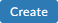
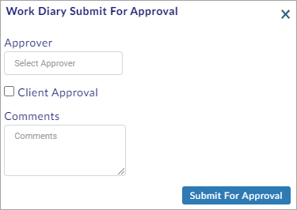
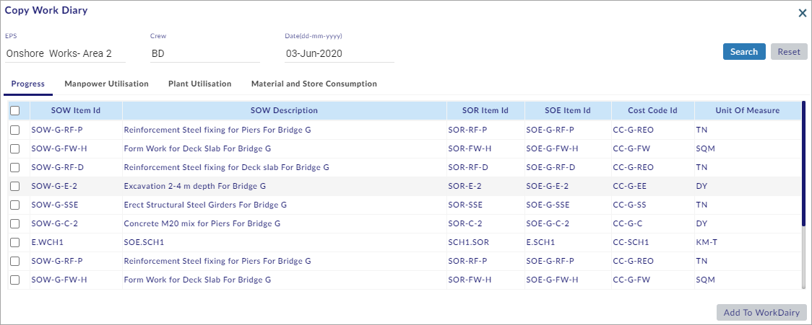

List of Created Work Diaries
You can perform the following in the List of Created Work Diaries Section:
- Create a New Work Diary
- Progress Details
- Manpower Utilisation
- Plant Utilisation
- Material and Store Consumption
- Search the Existing Records
- Submit the Work Dairy for Approval
- Request for additional time
- Copy the Template
- Search and Edit the Work Diary
This section helps you to create a new Work Diary.
To create a new Work Diary, do the following.
- Click
 and the Create Work Diary page opens as shown in the figure.
and the Create Work Diary page opens as shown in the figure.
- On the Create Work Diary page, select EPS or Project.
- Select Head-Company or Sub-Contract from the drop-down menu.
- If Sub-Contract is selected, Select Contract No.
Note:
- If Head-Company is selected, Contract No will be auto-filled from Projects > Project Settings > General Values.
- If Sub-Contract is selected, Procurement > Purchase order data is displayed in Contract No. After creating the work diary, the actual values will be synced to the selected Sub-Contract.
- Select Date, and then select Crew (double-click to select).
- Select Work Shift, and then select Weather (double-click to select).
Note:
- Projects > Project Library > Crew List is displayed in Crew.
- Projects > Project Library > Working Shifts is displayed in Work Shift.
- Enterprise > Central Library > Weather Classification is displayed in Weather.
- Click and the Project Cost Code window opens as shown in the figure.
- Select the required Cost Code(s) and click
 to add the Cost Code(s).
to add the Cost Code(s). - Click  and the page reopens with a new Work Diary Id as shown in the figure.
You have successfully created a new Work Diary ID.
To add the Scope of Works, do the following.
- Click
 and the Scope of Works window opens as shown in the figure.
and the Scope of Works window opens as shown in the figure.
Note:
- SOW and Cost Codes are linked in Projects > Project Library > Scope of Works.
- Only the SOW Items mapped to selected cost codes in main screen are displayed here.
- Select the required SOW(s) and click
 to add the SOW(s) as shown in the figure.
to add the SOW(s) as shown in the figure.
- Enter Cost Code Wise Progress Utilisation, and then enter Comments.
Note:
- Only the Cost Code ID that is linked is editable in the Cost Code Wise Progress Utilisation column.
- Click
 to choose and upload the required site photos from your computer.
to choose and upload the required site photos from your computer. - Click
 to save the details.
to save the details.
To add other SOW Cost Codes, do the following.
- Click and the Scope of Works window opens as shown in the figure.
Note:
- Only the SOW Items mapped to cost codes other than the selected cost codes in main screen are displayed here.
- Select the required SOW(s) and click
 to add the SOW(s).
to add the SOW(s). - Enter the Cost Code Wise Progress Utilisation, and then enter the Comments.
- Click
 to choose and upload the required site photos from your computer.
to choose and upload the required site photos from your computer.
Note:
- Select the SOW(s) and click
 to delete SOW(s).
to delete SOW(s).
- Click
 to save the details.
to save the details.
You have successfully saved the Progress Details.
To add the Manpower, do the following.
- Select the Manpower Utilisation tab.
- The Manpower Utilisation tab opens as shown in the figure.
- Click
 and the Employee Attendance window opens as shown in the figure.
and the Employee Attendance window opens as shown in the figure.
Note:
- List of employees who have attendance records for the selected crew will be displayed in the Employee Attendance window.
- If you have attendance records in other crews, select the required crew by selecting Select Crew.
- Enter any employee detail in the Employee Search text field to search the employee(s) and view the search results.
- Select the employee(s) and click
 to add the employee(s) as shown in the figure.
to add the employee(s) as shown in the figure.
- Select Wage Factor (double-click to select), and then enter the required details.
Note:
- Wage factor is displayed from Project Library.
- Total (Used Time Total + Idle Time Total) should not exceed the Max Hours/Day in Projects > Project Settings > General Values.
- Select the employee(s) and click to delete the employee(s) details.
- Click
 to save the details.
to save the details.
To add extra wages for an employee, do the following.
- Select the employee record as shown in the figure.
- Click and a new row is added as shown in the figure.
- Select Wage Factor (double-click to select), and then enter the required details.
Note:
- Click to delete the added wages.
- Click
 to save the details.
to save the details.
You have successfully saved the Manpower Utilisation Details.
To add the Plant, do the following.
- Select the Plant Utilisation tab.
- The Plant Utilisation tab opens as shown in the figure.
- Click
 and the Plant List window opens as shown in the figure.
and the Plant List window opens as shown in the figure.
Note:
- List of plants that have attendance records for the selected crew will be displayed in Plant List window.
- If you have attendance records in other crews, select the required crew by selecting Select Crew.
- Enter any plant detail in the Plant Search text field to search the plant(s) and view the search results.
- Select the plant(s) and click
 to add the plant(s) as shown in the figure.
to add the plant(s) as shown in the figure.
- Select shift as Single or Double from the C.O.C (Charge Out Category) drop-down menu, Click
 , and then enter the required details.
, and then enter the required details.
Note:
- C.O.C is fetched from Resources > Plants & Equipments > Charge out Rates tab.
- Total (Used Time Total + Idle Time Total) should not exceed the Max Hours/Day in Projects > Project Settings > General Values.
- Click
 to save the details.
to save the details.
You have successfully saved the Plant Utilisation Details.
Material and Store Consumption:
To add the Project Docket, do the following.
- Select the Material and Store Consumption tab.
- The Material and Store Consumption tab opens as shown in the figure.
- Click and the Project Docket Details window opens as shown in the figure.
Note:
- Project Dockets are generated in Resources > Materials > Project Dockets tab.
- Select Store Yard or Stock Piled from the Store drop-down menu.
Note:
- Materials stored in the Project area are shown in Stock Piled and the materials stored in the Central Yard are shown in Store Yard.
- Select Project Docket (double-click to select) and the materials are added as shown in the figure.
- Select the required materials and click
 to add the materials to the work dairy as shown in the figure.
to add the materials to the work dairy as shown in the figure.
- Enter the required material details.
Note:
- Select the material(s) and click
 to delete the material(s) details.
to delete the material(s) details.
- Click
 to save the details.
to save the details.
To add the Supplier Docket, do the following.
- Click and a row is added as shown in the figure.
- Select New or Existing from the Docket Type drop-down menu.
Note:
- New can be selected for newly supplied materials, and Existing can be selected for existing materials.
- If Existing is selected, select Docket Number (double-click to select). Data in all fields (Except Cost Code Wise Material Utilisation columns) are auto-filled.
- If New is selected, enter/select the required data in Docket Number, Docket Date, Purchase Order, Schedule Item, Received Qty, Defects if Any, and Comments; Resource Name, Supplier, Unit of Rate, Unit of Measure, and Delivery Location are auto-filled.
- Enter/select the required material details.
Note:
- Select the material(s) and click
 to delete the material(s) details.
to delete the material(s) details.
- Click
 to save the details.
to save the details.
You have successfully saved the Material and Store Consumption details and created a new Work Diary.
This section helps you to search the existing Records.
To search the existing Records, do the following.
- Perform steps 1 - 5 of Create New Work Diary Section. (See the Create New Work Diary Section above)
- Click Search to view the records.
Note:
- Click Reset to reset the screen to the default view.
You have successfully searched the existing records.
Submit Work Dairy for Approval:
This section helps you to Submit the Work Dairy for Approval.
To Submit the Work Dairy for Approval, do the following.
- After entering the required data in the required tabs, click and the Work Diary Submit For Approval window opens as shown in the figure.

- Select the Approver and the Approve User Details window opens as shown in the figure.
- Select the internal approver and write the comments in Comments.
Note:
- Admin – User List is displayed in Approve User Details window.
- A notification email is sent to the approver after approval submission.
- On the Work Diary Submit For Approval window, select Client Approval if the work diary requires approval from the client.
- Click to Submit the Work Dairy for approval.
You have successfully submitted the Work Dairy for Approval.
This section helps you to request for additional time.
To request for additional time, do the following.
- In case of exceeding normal time in Projects > Project Settings > Work Diary tab, click
 and the Request For Additional Time window opens as shown in the figure.
and the Request For Additional Time window opens as shown in the figure.

- On the Request For Additional Time window, select/enter the required details and click
 to request for additional time and generate a notification.
to request for additional time and generate a notification.
Note:
- Submit For Approval is disabled when normal time exceeds in Projects > Project Settings > Work Diary tab.
You have successfully requested for additional time.
This section helps you to copy the previous template.
To copy the previous template, do the following.
- Perform steps 1 - 9 of Create New Work Diary Section. (See the Create New Work Diary Section above)
- Click and the Copy Work Diary window opens as shown in the figure.

- Select Crew, and then select Date (any previous date).
Note:
- The previous day date is the default for Date.
- Click Search to view the search results.
Note:
- Click Reset to reset the screen to the default view.
- Select the Progress tab and select the required record(s).
- Select the Manpower Utilisation tab and select the required record(s).
- Select the Plant Utilisation tab and select the required record(s).
- Select the Material and Store Consumption tab and select the required record(s).
- Click to add the records to the work diary.
You have successfully copied the previous template.
This section helps you to Search and Edit the Work Diary.
To Search and Edit the Work Diary, do the following.
- Go to List of Created Work Diaries’ home page.
- Select EPS Name or Project Name, and the Enterprise Projects window opens as shown in the figure.

- Select the required projects and click
 .
. - Select Login User Records to search the records of the logged-in user (or select All User Records to search the records of all the users).
- Select From Date and To date.
- Click Search and the search results are shown on the screen as shown in the figure.
Note:
- Click Reset to reset the screen to the default view.
- Click
 and the Work Diary window opens as shown in the figure.
and the Work Diary window opens as shown in the figure.
- Edit the Work Diary details.
To perform actions using the various buttons available on the Work Diary window, see the Create New Work Diary Section above.
- Click
 to save the Work Diary details.
to save the Work Diary details.
You have successfully searched and edited the Work Diary.